- Generated on Sun Oct 11 2026 15:00:24 for Cwhip Programming Language by
 1.9.8
1.9.8
|
Cwhip Programming Language
|
Data Structures | |
| struct | BuildContext |
| struct | LinkInputs |
| class | PhaseTimer |
Functions | |
| void | addSwitch (cwhip::CommandLine &commandLine, char shortName, const std::string &longName, const std::string &name, const std::string &description, cwhip::CommandLineAction action=cwhip::CommandLineAction::None) |
| cwhip::CommandLine | makeCommandLine () |
| std::size_t | parseNonNegativeInteger (const std::string &value, const std::string &optionName) |
| void | traceTokens (const std::vector< cwhip::Token > &tokens, std::ostream &output) |
| std::string | shellQuote (const std::string &value) |
| void | writeFile (const std::string &path, const std::string &contents) |
| std::string | defaultExecutablePath (const std::string &inputPath) |
| cwhip::ResolvedPath | compilerExecutable () |
| std::string | describePath (const std::filesystem::path &path) |
| std::string | describePath (const cwhip::ResolvedPath &path) |
| void | writeResolvedPaths (std::ostream &output, const std::string &prefix, const cwhip::ResourcePaths &resources, const cwhip::ModuleSearchPaths &modules) |
| void | requireResource (const std::filesystem::path &path, const std::string &description, const std::string &overrideVariable) |
| int | runCompiler (const BuildContext &context, const std::vector< std::string > &arguments, const std::string &operation) |
| std::string | temporaryPath (const std::string &outputPath, const std::string &suffix) |
| void | ensureOutputDirectory (const std::string &outputPath) |
| int | buildExecutable (const BuildContext &context, const std::vector< std::string > &irPaths, const std::vector< std::string > &objectPaths, const std::string &inlineShimPath, const std::vector< std::string > &packageLibraryPaths, const std::vector< std::string > &packageLibraries, const std::vector< std::string > &libraryPaths, const std::vector< std::string > &libraries, const std::string &outputPath, bool debug) |
| void | appendUnique (std::vector< std::string > &values, const std::string &value) |
| std::string | linkSidecarPath (const std::string &objectPath) |
| void | writeLinkSidecar (const std::string &objectPath, const LinkInputs &inputs) |
| LinkInputs | readLinkSidecars (const std::vector< std::string > &objectPaths) |
| int | buildObject (const BuildContext &context, const std::vector< std::string > &irPaths, const std::string &inlineShimPath, const std::string &outputPath, std::vector< std::string > &temporaryPaths, bool debug) |
| bool | samePath (const std::string &left, const std::string &right) |
Variables | |
| constexpr std::size_t | maximumVerbosity = 3 |
| constexpr std::size_t | phaseVerbosity = 1 |
| constexpr std::size_t | pathVerbosity = 2 |
| constexpr std::size_t | timingVerbosity = 3 |
| void anonymous_namespace{main.cpp}::addSwitch | ( | cwhip::CommandLine & | commandLine, |
| char | shortName, | ||
| const std::string & | longName, | ||
| const std::string & | name, | ||
| const std::string & | description, | ||
| cwhip::CommandLineAction | action = cwhip::CommandLineAction::None |
||
| ) |
Definition at line 39 of file main.cpp.
Referenced by makeCommandLine().
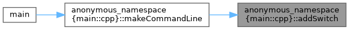
| void anonymous_namespace{main.cpp}::appendUnique | ( | std::vector< std::string > & | values, |
| const std::string & | value | ||
| ) |
Definition at line 390 of file main.cpp.
Referenced by main(), and readLinkSidecars().
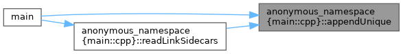
| int anonymous_namespace{main.cpp}::buildExecutable | ( | const BuildContext & | context, |
| const std::vector< std::string > & | irPaths, | ||
| const std::vector< std::string > & | objectPaths, | ||
| const std::string & | inlineShimPath, | ||
| const std::vector< std::string > & | packageLibraryPaths, | ||
| const std::vector< std::string > & | packageLibraries, | ||
| const std::vector< std::string > & | libraryPaths, | ||
| const std::vector< std::string > & | libraries, | ||
| const std::string & | outputPath, | ||
| bool | debug | ||
| ) |
Definition at line 350 of file main.cpp.
References ensureOutputDirectory(), anonymous_namespace{main.cpp}::BuildContext::includeDirectory, runCompiler(), and anonymous_namespace{main.cpp}::BuildContext::runtimeLibrary.
Referenced by main().
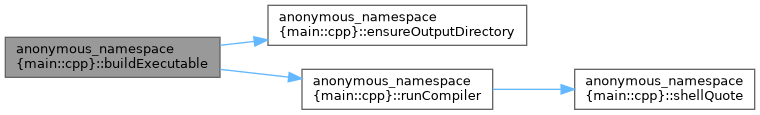
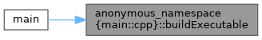
| int anonymous_namespace{main.cpp}::buildObject | ( | const BuildContext & | context, |
| const std::vector< std::string > & | irPaths, | ||
| const std::string & | inlineShimPath, | ||
| const std::string & | outputPath, | ||
| std::vector< std::string > & | temporaryPaths, | ||
| bool | debug | ||
| ) |
Definition at line 460 of file main.cpp.
References ensureOutputDirectory(), anonymous_namespace{main.cpp}::BuildContext::includeDirectory, runCompiler(), and temporaryPath().
Referenced by main().
| cwhip::ResolvedPath anonymous_namespace{main.cpp}::compilerExecutable | ( | ) |
Definition at line 215 of file main.cpp.
References cwhip::processEnvironment().
Referenced by main(), and writeResolvedPaths().
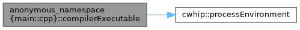
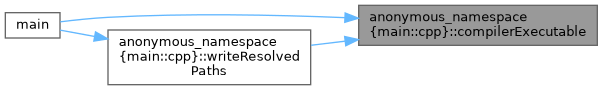
| std::string anonymous_namespace{main.cpp}::defaultExecutablePath | ( | const std::string & | inputPath | ) |
| std::string anonymous_namespace{main.cpp}::describePath | ( | const cwhip::ResolvedPath & | path | ) |
Definition at line 263 of file main.cpp.
References describePath().
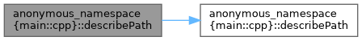
| std::string anonymous_namespace{main.cpp}::describePath | ( | const std::filesystem::path & | path | ) |
Definition at line 258 of file main.cpp.
Referenced by describePath(), and writeResolvedPaths().
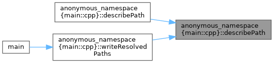
| void anonymous_namespace{main.cpp}::ensureOutputDirectory | ( | const std::string & | outputPath | ) |
Definition at line 343 of file main.cpp.
Referenced by buildExecutable(), buildObject(), and main().
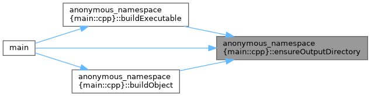
| std::string anonymous_namespace{main.cpp}::linkSidecarPath | ( | const std::string & | objectPath | ) |
Definition at line 396 of file main.cpp.
Referenced by readLinkSidecars(), and writeLinkSidecar().
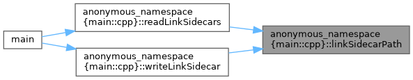
| cwhip::CommandLine anonymous_namespace{main.cpp}::makeCommandLine | ( | ) |
Definition at line 52 of file main.cpp.
References addSwitch().
Referenced by main().
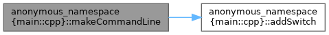
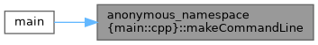
| std::size_t anonymous_namespace{main.cpp}::parseNonNegativeInteger | ( | const std::string & | value, |
| const std::string & | optionName | ||
| ) |
Definition at line 157 of file main.cpp.
Referenced by main().
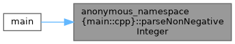
| LinkInputs anonymous_namespace{main.cpp}::readLinkSidecars | ( | const std::vector< std::string > & | objectPaths | ) |
Definition at line 419 of file main.cpp.
References appendUnique(), anonymous_namespace{main.cpp}::LinkInputs::libraries, anonymous_namespace{main.cpp}::LinkInputs::libraryPaths, and linkSidecarPath().
Referenced by main().
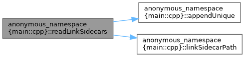
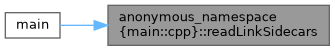
| void anonymous_namespace{main.cpp}::requireResource | ( | const std::filesystem::path & | path, |
| const std::string & | description, | ||
| const std::string & | overrideVariable | ||
| ) |
Definition at line 301 of file main.cpp.
Referenced by main().
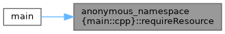
| int anonymous_namespace{main.cpp}::runCompiler | ( | const BuildContext & | context, |
| const std::vector< std::string > & | arguments, | ||
| const std::string & | operation | ||
| ) |
Definition at line 310 of file main.cpp.
References anonymous_namespace{main.cpp}::BuildContext::compiler, pathVerbosity, shellQuote(), and anonymous_namespace{main.cpp}::BuildContext::verbosity.
Referenced by buildExecutable(), and buildObject().
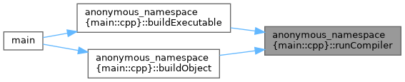
| bool anonymous_namespace{main.cpp}::samePath | ( | const std::string & | left, |
| const std::string & | right | ||
| ) |
Definition at line 492 of file main.cpp.
Referenced by main().
| std::string anonymous_namespace{main.cpp}::shellQuote | ( | const std::string & | value | ) |
Definition at line 176 of file main.cpp.
Referenced by runCompiler().
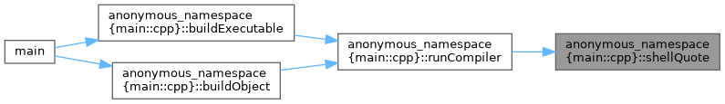
| std::string anonymous_namespace{main.cpp}::temporaryPath | ( | const std::string & | outputPath, |
| const std::string & | suffix | ||
| ) |
Definition at line 338 of file main.cpp.
Referenced by buildObject(), and main().
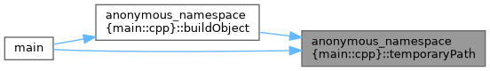
| void anonymous_namespace{main.cpp}::traceTokens | ( | const std::vector< cwhip::Token > & | tokens, |
| std::ostream & | output | ||
| ) |
Definition at line 168 of file main.cpp.
References cwhip::tokenTypeName().
Referenced by main().
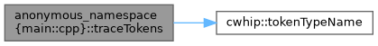
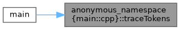
| void anonymous_namespace{main.cpp}::writeFile | ( | const std::string & | path, |
| const std::string & | contents | ||
| ) |
Definition at line 189 of file main.cpp.
Referenced by main().
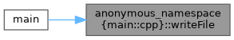
| void anonymous_namespace{main.cpp}::writeLinkSidecar | ( | const std::string & | objectPath, |
| const LinkInputs & | inputs | ||
| ) |
Definition at line 400 of file main.cpp.
References anonymous_namespace{main.cpp}::LinkInputs::libraries, anonymous_namespace{main.cpp}::LinkInputs::libraryPaths, and linkSidecarPath().
Referenced by main().
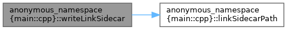
| void anonymous_namespace{main.cpp}::writeResolvedPaths | ( | std::ostream & | output, |
| const std::string & | prefix, | ||
| const cwhip::ResourcePaths & | resources, | ||
| const cwhip::ModuleSearchPaths & | modules | ||
| ) |
Definition at line 267 of file main.cpp.
References compilerExecutable(), and describePath().
Referenced by main().
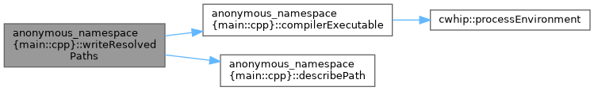
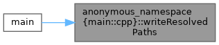
|
constexpr |
|
constexpr |
Definition at line 212 of file main.cpp.
Referenced by main(), and runCompiler().
|
constexpr |
Definition at line 211 of file main.cpp.
Referenced by main(), and anonymous_namespace{main.cpp}::PhaseTimer::PhaseTimer().
|
constexpr |
Definition at line 213 of file main.cpp.
Referenced by anonymous_namespace{main.cpp}::PhaseTimer::~PhaseTimer().